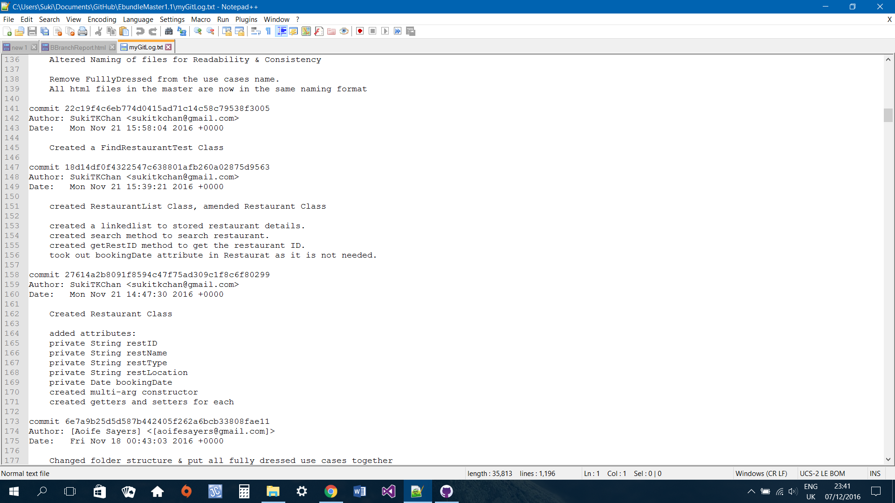
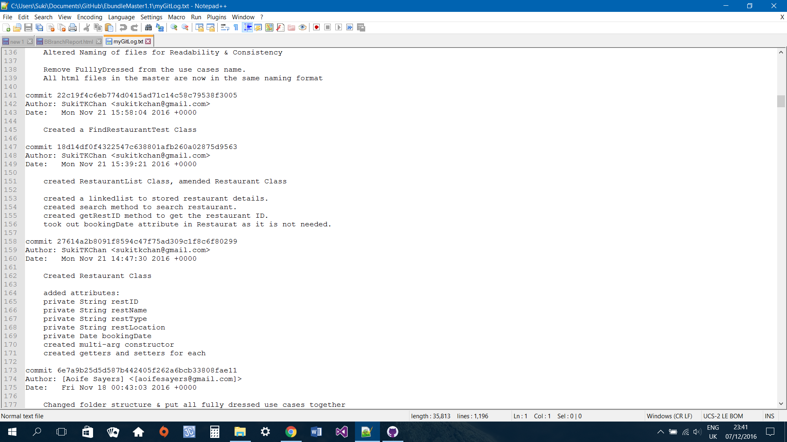

Ebundle Master
Aoife Sayers - A
Suki Chan - B
Dylan Chan - C
An e-ticketing system that allows customers to purchase concert and performance tickets, select date and location of concert, purchase ticket.In addition the system offers bundles to customers which allows them to search for transport such as bus and train, hotel room and restaurant.
As a group we first came up with the idea of an eticket system. After consulting with our lecturer we decided we need to add extra features such as offering to search for Hotel, Transport and Restaurant. We then name our system EBundleMaster. We first came up with a list of brief use cases, then we divided among each member of the team. I was tasked to write use cases on the following:
I chose Search for restaurant component to developed further on. I first identified the four types of nouns, i.e.
In my search for restauarant program, I have applied Single-responsibility principle and Dependency Inversion principle by creating Restaurant and RestaurantList classes. Restaurant class models a restaurant object and RestaurantList class in charge of storing and finding list of restaurants.
In my search for restauarant program, I have removed smells like Primitive Obssession and shotgun surgery by creating enum classes for Restaurant Type,restaurant location and restaurant name. This will ensure type safety and no need type casting. I have also used generic types on my Restaurant object for better code re-usability.
Refactoring reduce the risk of introducing errors, improving code readability and reduced complexity. In my program I used encapsulate field (Restaurant Class), making attribute private and allows access to the field with getter and setter method. I also used enhanced for loop instead of an iterator. This improves the readability and clarity of my code.
The project has been interesting. As a team we collaborated well. We communicated since the start and we would meet often to discuss our progress. We would also give feedback on each other's work which really helped when I was writing my use cases. I have learned to use new tool such as Github for version control and I found this very useful in tracking what I did previously. I learned that writing good and meaningful commit messages is very important as it allows others to understand what I have done. I also learned the importance of refactoring my code to make it readable and less complex.
My individual branch was the BBranch located at
https://github.com/AoifeNicAntSaoir/EbundleMaster1.1/tree/BBranchThe master branch is located at
https://github.com/AoifeNicAntSaoir/EbundleMaster1.1 

See myGitLog.txt for more commit messages